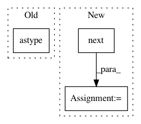

9c7eab3c8f334eb712472d2dfa456695688ded61,mask/eolearn/mask/cloud_mask.py,AddMultiCloudMaskTask,execute,#AddMultiCloudMaskTask#Any#,794
Before Change
inter_mask = mono_mask & multi_mask
// Add features
is_data = eopatch.mask[self.is_data_feature].astype(bool)
if mono_mask_feature is not None:
mono_mask = self._dilate_all(mono_mask)
eopatch.mask[mono_mask_feature] = (mono_mask * is_data).astype(bool)
After Change
feature_type, feature_name = next(self.data_feature(eopatch))
bands = eopatch[feature_type][feature_name][..., self.band_indices].astype(np.float32)
feature_type, feature_name = next(self.is_data_feature(eopatch))
is_data = eopatch[feature_type][feature_name].astype(bool)
original_shape = bands.shape[1:-1]
scale_factors, self.sigma = self._parse_resolution_data(original_shape, eopatch.meta_info)
In pattern: SUPERPATTERN
Frequency: 3
Non-data size: 3
Instances
Project Name: sentinel-hub/eo-learn
Commit Name: 9c7eab3c8f334eb712472d2dfa456695688ded61
Time: 2019-09-20
Author: lojze.zust@sinergise.com
File Name: mask/eolearn/mask/cloud_mask.py
Class Name: AddMultiCloudMaskTask
Method Name: execute
Project Name: modAL-python/modAL
Commit Name: caec2c73aad40c0e632e978964ec5c3cf4773c9e
Time: 2019-06-02
Author: theodore.danka@gmail.com
File Name: examples/pytorch_integration.py
Class Name:
Method Name:
Project Name: NeuromorphicProcessorProject/snn_toolbox
Commit Name: cf0181bb0bf5add0686ca4dd4c03e6fb04a34703
Time: 2016-08-22
Author: bodo.rueckauer@gmail.com
File Name: snntoolbox/io_utils/datasets/cifar10.py
Class Name:
Method Name: get_cifar10